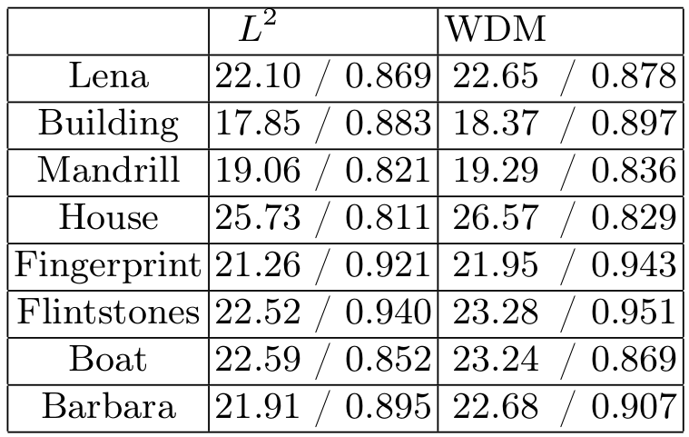

A correlation-based dissimilarity measure for noisy patches
Working in progress...
$L^p$ are the classical distances for the noisy patches of size $s \times s$ :
$d_p^p(P_{1},P_{2})= ||P_{1}-P_{2}||_p^p$
Then, we define our dissimilarity measure WDM. The classical autocorrelation estimator $r_{P}$ is defined on a noisy patch $P$ of size $s \times s$ for all possible lags $(l,m) \in \{-\frac{s}{2},..., \frac{s}{2} \}^2$ :
$r_{P}(l,m)= \sum_{(x,y)} P(x,y) P(x+l,y+m)$
The WDM criteria consists in :
$d_w^2(P_{1},P_{2})= ||r_{P_{1}-P_{2}}||_2^2$
The new similarity criterion defined previously can be applied to any patch based algorithm. However, for evaluation purposes we will focus on the original NLM algorithm. To limit the number of parameters, we fix a search window of size $W=21$. To compare the results on a fair basis the bandwidth parameter $h$ is optimized in each case to obtain the best SNR. The SNR and SSIM results for different images using different patch sizes are shown on the following table. We can see that changing the distance from $L^2$ to WDM always improves the SNR by around 0.5 dB, sometimes more. The SSIM is also consistently improved.

SNR (in dB) and SSIM performances of the NLM algorithm for $L^2$ and WDM patch distances with $\sigma=25$